1064A20 turbo/manifold/sleeve assembly dismantle
- Path
- Procedures > 10 ENGINE > 1064 ENGINE SUPERCHARGING SYSTEM > 1064A TURBOCHARGER ASSEMBLY > 1064A20 turbo/manifold/sleeve assembly dismantle
- Kind
- repair procedure (removal / refitting; the operation number is the code)
- Applies to
- engines: 1.9 JTD 8V; all production periods
- Interactive page
- https://sloeber94.github.io/elrnDB-fDbl/en/#/2584501
Applies to: engines: 1.9 JTD 8V; all production periods
 Removing
Removing
 Refitting
RefittingPlace the turbocharger assembly in the vice.
1. Undo the bolts (1a) and remove the turbocharger engine oil return pipe (1b) with flange.
2. Undo the connectors (2a) and remove the engine oil supply pipe to the turbocharger (2b).
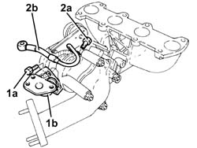
Applies to: engines: 1.9 JTD 8V; all production periods
1. Undo the fixing nuts (1a) and remove the hose connected to the exhaust pipe (1b).
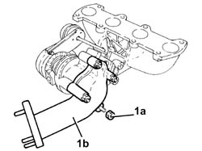
Applies to: engines: 1.9 JTD 8V; all production periods
1. Undo the nuts (1a) and remove the exhaust manifold (1b) from the turbocharger.
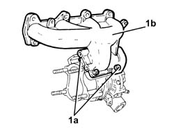
Applies to: engines: 1.9 JTD 8V; all production periods
Refitting
Removing1. Connect the exhaust pipe (1a) to the turbocharger and tighten nuts (1b) to the specified torque.
Fastening | Component | dia | Value (daNm) | |
|---|---|---|---|---|
1b | Nut | EXHAUST MANIFOLD/S | M8 | (Turbocharger side) 2.3 - 2.8 |
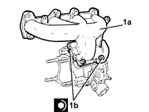
Applies to: engines: 1.9 JTD 8V; all production periods
1. Place the turbocharger and exhaust manifold assembly (1a) in its housing and tighten the nuts (1b) to the recommended torque.
Fastening | Component | dia | Value (daNm) | |
|---|---|---|---|---|
1b | Nut | SLEEVE TO EXHAUST PIPE | M8 | (Turbocharger side) 2.3 - 2.8 |
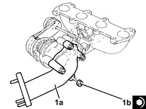
Applies to: engines: 1.9 JTD 8V; all production periods
1. Position the turbocharger engine oil supply pipe (1a) in its housing and secure it tightening connector (1b) to the recommended torque.
Fastening | Component | dia | Value (daNm) | |
|---|---|---|---|---|
1b | Connector | OIL DELIVERY PIPE TO TURBO | M10 | (Turbocharger side) 1.4 - 1.7 |
2. Position the turbocharger engine oil return pipe (2a) in its housing complete with flanges and secure it with the bolts (2b).
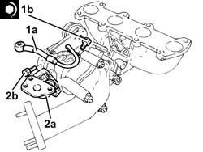
Applies to: engines: 1.9 JTD 8V; production: da 12/03; only with equipment: MY 2005
Place the turbocharger assembly in the vice.
1. Undo the nuts (1a) and remove the exhaust manifold (1b) from the turbocharger.
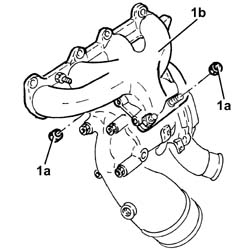
Applies to: engines: 1.9 JTD 8V; production: da 12/03; only with equipment: MY 2005
1. Undo the fixing bolts (1a) and remove the turbocharger oil return pipe (1b).
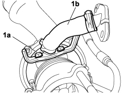
Applies to: engines: 1.9 JTD 8V; production: da 12/03; only with equipment: MY 2005
1. Undo the connectors (1a) and remove the engine oil supply pipe to the turbocharger (1b).
2. Undo the nuts (2a) and remove the catalytic preconverter (2b).
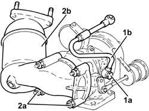
Applies to: engines: 1.9 JTD 8V; production: da 12/03; only with equipment: MY 2005
1. Place the catalytic conveter (1a) in its housing and fasten it tightening the nuts (1b) to the recommended torque.
Fastening | Component | dia | Value (daNm) | |
|---|---|---|---|---|
1b | Nut | CATALYTIC PRE-CONVERTER | M10 | (Turbocharger side) 2.0 - 3.0 |
2. Position the turbocharger engine oil supply pipe (2a) in its housing and secure it tightening connector (2b) to the recommended torque.
Fastening | Component | dia | Value (daNm) | |
|---|---|---|---|---|
2b | Connector | Engine oil supply pipe to turbocharger - turbocharger side | M10 | 1.4 ÷ 1.6 |
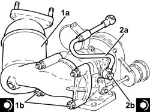
Applies to: engines: 1.9 JTD 8V; production: da 12/03; only with equipment: MY 2005
1. Connect the exhaust pipe (1a) to the turbocharger and tighten nuts (1b) to the specified torque.
Fastening | Component | dia | Value (daNm) | |
|---|---|---|---|---|
1b | Nut | EXHAUST MANIFOLD/S | M8 | (Turbocharger side) 2.3 - 2.8 |
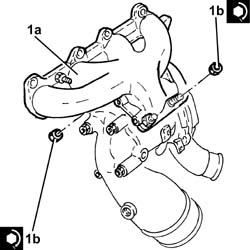